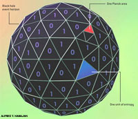
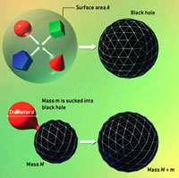
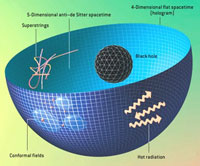

Theoretical results about black holes suggest that the universe could be like a gigantic hologram
Scientific American August 2003
An astonishing theory called the holographic principle holds that the universe is like a hologram: just as a trick of light allows a fully three-dimensional image to be recorded on a flat piece of film, our seemingly three-dimensional universe could be completely equivalent to alternative quantum fields and physical laws "painted" on a distant, vast surface.
The physics of black holes--immensely dense concentrations of mass--provides a hint that the principle might be true. Studies of black holes show that, although it defies common sense, the maximum entropy or information content of any region of space is defined not by its volume but by its surface area.
Physicists hope that this surprising finding is a clue to the ultimate theory of reality.
Ask anybody what the physical world is made of, and you are likely to be told "matter and energy."
Yet if we have learned anything from engineering, biology and physics, information is just as crucial an ingredient. The robot at the automobile factory is supplied with metal and plastic but can make nothing useful without copious instructions telling it which part to weld to what and so on. A ribosome in a cell in your body is supplied with amino acid building blocks and is powered by energy released by the conversion of ATP to ADP, but it can synthesize no proteins without the information brought to it from the DNA in the cell's nucleus. Likewise, a century of developments in physics has taught us that information is a crucial player in physical systems and processes. Indeed, a current trend, initiated by John A. Wheeler of Princeton University, is to regard the physical world as made of information, with energy and matter as incidentals.
This viewpoint invites a new look at venerable questions. The information storage capacity of devices such as hard disk drives has been increasing by leaps and bounds. When will such progress halt? What is the ultimate information capacity of a device that weighs, say, less than a gram and can fit inside a cubic centimeter (roughly the size of a computer chip)? How much information does it take to describe a whole universe? Could that description fit in a computer's memory? Could we, as William Blake memorably penned, "see the world in a grain of sand," or is that idea no more than poetic license?
Remarkably, recent developments in theoretical physics answer some of these questions, and the answers might be important clues to the ultimate theory of reality. By studying the mysterious properties of black holes, physicists have deduced absolute limits on how much information a region of space or a quantity of matter and energy can hold. Related results suggest that our universe, which we perceive to have three spatial dimensions, might instead be "written" on a two-dimensional surface, like a hologram. Our everyday perceptions of the world as three-dimensional would then be either a profound illusion or merely one of two alternative ways of viewing reality. A grain of sand may not encompass our world, but a flat screen might.

The Entropy of a Black Hole
The Entropy of a Black Hole is proportional to the area of its event horizon, the surface within which even light cannot escape the gravity of the hole. Specifically, a hole with a horizon spanning A Planck areas has A/4 units of entropy. (The Planck area, approximately 10-66 square centimeter, is the fundamental quantum unit of area determined by the strength of gravity, the speed of light and the size of quanta.) Considered as information, it is as if the entropy were written on the event horizon, with each bit (each digital 1 or 0) corresponding to four Planck areas.
A Tale of Two Entropies
Formal information theory originated in seminal 1948 papers by American applied mathematician Claude E. Shannon, who introduced today's most widely used measure of information content: entropy. Entropy had long been a central concept of thermodynamics, the branch of physics dealing with heat. Thermodynamic entropy is popularly described as the disorder in a physical system. In 1877 Austrian physicist Ludwig Boltzmann characterized it more precisely in terms of the number of distinct microscopic states that the particles composing a chunk of matter could be in while still looking like the same macroscopic chunk of matter. For example, for the air in the room around you, one would count all the ways that the individual gas molecules could be distributed in the room and all the ways they could be moving.
When Shannon cast about for a way to quantify the information contained in, say, a message, he was led by logic to a formula with the same form as Boltzmann's. The Shannon entropy of a message is the number of binary digits, or bits, needed to encode it. Shannon's entropy does not enlighten us about the value of information, which is highly dependent on context. Yet as an objective measure of quantity of information, it has been enormously useful in science and technology. For instance, the design of every modern communications device--from cellular phones to modems to compact-disc players--relies on Shannon entropy.
Thermodynamic entropy and Shannon entropy are conceptually equivalent: the number of arrangements that are counted by Boltzmann entropy reflects the amount of Shannon information one would need to implement any particular arrangement. The two entropies have two salient differences, though. First, the thermodynamic entropy used by a chemist or a refrigeration engineer is expressed in units of energy divided by temperature, whereas the Shannon entropy used by a communications engineer is in bits, essentially dimensionless. That difference is merely a matter of convention.

Limits of Functional Density
The thermodynamics of black holes allows one to deduce limits on the density of entropy or information in various circumstances. The holographic bound defines how much information can be contained in a specified region of space. It can be derived by considering a roughly spherical distribution of matter that is contained within a surface of area A. The matter is induced to collapse to form a black hole (a). The black hole's area must be smaller than A, so its entropy must be less than A/4 [see illustration]. Because entropy cannot decrease, one infers that the original distribution of matter also must carry less than A/4 units of entropy or information. This result--that the maximum information content of a region of space is fixed by its area--defies the commonsense expectation that the capacity of a region should depend on its volume.
The universal entropy bound defines how much information can be carried by a mass m of diameter d. It is derived by imagining that a capsule of matter is engulfed by a black hole not much wider than it (b). The increase in the black hole's size places a limit on how much entropy the capsule could have contained. This limit is tighter than the holographic bound, except when the capsule is almost as dense as a black hole (in which case the two bounds are equivalent).
The holographic and universal information bounds are far beyond the data storage capacities of any current technology, and they greatly exceed the density of information on chromosomes and the thermodynamic entropy of water (c).
Even when reduced to common units, however, typical values of the two entropies differ vastly in magnitude. A silicon microchip carrying a gigabyte of data, for instance, has a Shannon entropy of about 1010 bits (one byte is eight bits), tremendously smaller than the chip's thermodynamic entropy, which is about 1023 bits at room temperature. This discrepancy occurs because the entropies are computed for different degrees of freedom. A degree of freedom is any quantity that can vary, such as a coordinate specifying a particle's location or one component of its velocity.
The Shannon entropy of the chip cares only about the overall state of each tiny transistor etched in the silicon crystal--the transistor is on or off; it is a 0 or a 1--a single binary degree of freedom. Thermodynamic entropy, in contrast, depends on the states of all the billions of atoms (and their roaming electrons) that make up each transistor. As miniaturization brings closer the day when each atom will store one bit of information for us, the useful Shannon entropy of the state-of-the-art microchip will edge closer in magnitude to its material's thermodynamic entropy. When the two entropies are calculated for the same degrees of freedom, they are equal.
What are the ultimate degrees of freedom? Atoms, after all, are made of electrons and nuclei, nuclei are agglomerations of protons and neutrons, and those in turn are composed of quarks. Many physicists today consider electrons and quarks to be excitations of superstrings, which they hypothesize to be the most fundamental entities. But the vicissitudes of a century of revelations in physics warn us not to be dogmatic. There could be more levels of structure in our universe than are dreamt of in today's physics.
One cannot calculate the ultimate information capacity of a chunk of matter or, equivalently, its true thermodynamic entropy, without knowing the nature of the ultimate constituents of matter or of the deepest level of structure, which I shall refer to as level X. (This ambiguity causes no problems in analyzing practical thermodynamics, such as that of car engines, for example, because the quarks within the atoms can be ignored--they do not change their states under the relatively benign conditions in the engine.) Given the dizzying progress in miniaturization, one can playfully contemplate a day when quarks will serve to store information, one bit apiece perhaps. How much information would then fit into our one-centimeter cube? And how much if we harness superstrings or even deeper, yet undreamt of levels? Surprisingly, developments in gravitation physics in the past three decades have supplied some clear answers to what seem to be elusive questions.
The information content of a pile of computer chips increases in proportion with the number of chips or, equivalently, the volume they occupy. That simple rule must break down for a large enough pile of chips because eventually the information would exceed the holographic bound, which depends on the surface area, not the volume. The "breakdown" occurs when the immense pile of chips collapses to form a black hole. Black Hole Thermodynamics
A central player in these developments is the black hole. Black holes are a consequence of general relativity, Albert Einstein's 1915 geometric theory of gravitation. In this theory, gravitation arises from the curvature of spacetime, which makes objects move as if they were pulled by a force. Conversely, the curvature is caused by the presence of matter and energy. According to Einstein's equations, a sufficiently dense concentration of matter or energy will curve spacetime so extremely that it rends, forming a black hole. The laws of relativity forbid anything that went into a black hole from coming out again, at least within the classical (nonquantum) description of the physics. The point of no return, called the event horizon of the black hole, is of crucial importance. In the simplest case, the horizon is a sphere, whose surface area is larger for more massive black holes.
It is impossible to determine what is inside a black hole. No detailed information can emerge across the horizon and escape into the outside world. In disappearing forever into a black hole, however, a piece of matter does leave some traces. Its energy (we count any mass as energy in accordance with Einstein's E = mc2) is permanently reflected in an increment in the black hole's mass. If the matter is captured while circling the hole, its associated angular momentum is added to the black hole's angular momentum. Both the mass and angular momentum of a black hole are measurable from their effects on spacetime around the hole. In this way, the laws of conservation of energy and angular momentum are upheld by black holes. Another fundamental law, the second law of thermodynamics, appears to be violated.

Holographic Space-Time
Two universes of different dimension and obeying disparate physical laws are rendered completely equivalent by the holographic principle. Theorists have demonstrated this principle mathematically for a specific type of five-dimensional spacetime ("anti璬e Sitter") and its four-dimensional boundary. In effect, the 5-D universe is recorded like a hologram on the 4-D surface at its periphery. Superstring theory rules in the 5-D spacetime, but a so-called conformal field theory of point particles operates on the 4-D hologram. A black hole in the 5-D spacetime is equivalent to hot radiation on the hologram--for example, the hole and the radiation have the same entropy even though the physical origin of the entropy is completely different for each case. Although these two descriptions of the universe seem utterly unalike, no experiment could distinguish between them, even in principle.
The second law of thermodynamics summarizes the familiar observation that most processes in nature are irreversible: a teacup falls from the table and shatters, but no one has ever seen shards jump up of their own accord and assemble into a teacup. The second law of thermodynamics forbids such inverse processes. It states that the entropy of an isolated physical system can never decrease; at best, entropy remains constant, and usually it increases. This law is central to physical chemistry and engineering; it is arguably the physical law with the greatest impact outside physics.
As first emphasized by Wheeler, when matter disappears into a black hole, its entropy is gone for good, and the second law seems to be transcended, made irrelevant. A clue to resolving this puzzle came in 1970, when Demetrious Christodoulou, then a graduate student of Wheeler's at Princeton, and Stephen W. Hawking of the University of Cambridge independently proved that in various processes, such as black hole mergers, the total area of the event horizons never decreases. The analogy with the tendency of entropy to increase led me to propose in 1972 that a black hole has entropy proportional to the area of its horizon. I conjectured that when matter falls into a black hole, the increase in black hole entropy always compensates or overcompensates for the "lost" entropy of the matter. More generally, the sum of black hole entropies and the ordinary entropy outside the black holes cannot decrease. This is the generalized second law--GSL for short.
Our innate perception that the world is three-dimensional could be an extraordinary illusion.
Hawking's radiation process allowed him to determine the proportionality constant between black hole entropy and horizon area: black hole entropy is precisely one quarter of the event horizon's area measured in Planck areas. (The Planck length, about 10-33 centimeter, is the fundamental length scale related to gravity and quantum mechanics. The Planck area is its square.) Even in thermodynamic terms, this is a vast quantity of entropy. The entropy of a black hole one centimeter in diameter would be about 1066 bits, roughly equal to the thermodynamic entropy of a cube of water 10 billion kilometers on a side.
The World as a Hologram
The GSL allows us to set bounds on the information capacity of any isolated physical system, limits that refer to the information at all levels of structure down to level X. In 1980 I began studying the first such bound, called the universal entropy bound, which limits how much entropy can be carried by a specified mass of a specified size [see box on opposite page]. A related idea, the holographic bound, was devised in 1995 by Leonard Susskind of Stanford University. It limits how much entropy can be contained in matter and energy occupying a specified volume of space.
In his work on the holographic bound, Susskind considered any approximately spherical isolated mass that is not itself a black hole and that fits inside a closed surface of area A. If the mass can collapse to a black hole, that hole will end up with a horizon area smaller than A. The black hole entropy is therefore smaller than A/4. According to the GSL, the entropy of the system cannot decrease, so the mass's original entropy cannot have been bigger than A/4. It follows that the entropy of an isolated physical system with boundary area A is necessarily less than A/4. What if the mass does not spontaneously collapse? In 2000 I showed that a tiny black hole can be used to convert the system to a black hole not much different from the one in Susskind's argument. The bound is therefore independent of the constitution of the system or of the nature of level X. It just depends on the GSL.
We can now answer some of those elusive questions about the ultimate limits of information storage. A device measuring a centimeter across could in principle hold up to 1066 bits--a mind-boggling amount. The visible universe contains at least 10100 bits of entropy, which could in principle be packed inside a sphere a tenth of a light-year across. Estimating the entropy of the universe is a difficult problem, however, and much larger numbers, requiring a sphere almost as big as the universe itself, are entirely plausible.
But it is another aspect of the holographic bound that is truly astonishing. Namely, that the maximum possible entropy depends on the boundary area instead of the volume. Imagine that we are piling up computer memory chips in a big heap. The number of transistors--the total data storage capacity--increases with the volume of the heap. So, too, does the total thermodynamic entropy of all the chips. Remarkably, though, the theoretical ultimate information capacity of the space occupied by the heap increases only with the surface area. Because volume increases more rapidly than surface area, at some point the entropy of all the chips would exceed the holographic bound. It would seem that either the GSL or our commonsense ideas of entropy and information capacity must fail. In fact, what fails is the pile itself: it would collapse under its own gravity and form a black hole before that impasse was reached. Thereafter each additional memory chip would increase the mass and surface area of the black hole in a way that would continue to preserve the GSL.
This surprising result--that information capacity depends on surface area--has a natural explanation if the holographic principle (proposed in 1993 by Nobelist Gerard 't Hooft of the University of Utrecht in the Netherlands and elaborated by Susskind) is true. In the everyday world, a hologram is a special kind of photograph that generates a full three-dimensional image when it is illuminated in the right manner. All the information describing the 3-D scene is encoded into the pattern of light and dark areas on the two-dimensional piece of film, ready to be regenerated. The holographic principle contends that an analogue of this visual magic applies to the full physical description of any system occupying a 3-D region: it proposes that another physical theory defined only on the 2-D boundary of the region completely describes the 3-D physics. If a 3-D system can be fully described by a physical theory operating solely on its 2-D boundary, one would expect the information content of the system not to exceed that of the description on the boundary.
A Universe Painted on Its Boundary
Can we apply the holographic principle to the universe at large? The real universe is a 4-D system: it has volume and extends in time. If the physics of our universe is holographic, there would be an alternative set of physical laws, operating on a 3-D boundary of spacetime somewhere, that would be equivalent to our known 4-D physics. We do not yet know of any such 3-D theory that works in that way. Indeed, what surface should we use as the boundary of the universe? One step toward realizing these ideas is to study models that are simpler than our real universe.
A class of concrete examples of the holographic principle at work involves so-called anti-de Sitter spacetimes. The original de Sitter spacetime is a model universe first obtained by Dutch astronomer Willem de Sitter in 1917 as a solution of Einstein's equations, including the repulsive force known as the cosmological constant. De Sitter's spacetime is empty, expands at an accelerating rate and is very highly symmetrical. In 1997 astronomers studying distant supernova explosions concluded that our universe now expands in an accelerated fashion and will probably become increasingly like a de Sitter spacetime in the future. Now, if the repulsion in Einstein's equations is changed to attraction, de Sitter's solution turns into the anti-de Sitter spacetime, which has equally as much symmetry. More important for the holographic concept, it possesses a boundary, which is located "at infinity" and is a lot like our everyday spacetime.
Using anti-de Sitter spacetime, theorists have devised a concrete example of the holographic principle at work: a universe described by superstring theory functioning in an anti-de Sitter spacetime is completely equivalent to a quantum field theory operating on the boundary of that spacetime [see box above]. Thus, the full majesty of superstring theory in an anti-de Sitter universe is painted on the boundary of the universe. Juan Maldacena, then at Harvard University, first conjectured such a relation in 1997 for the 5-D anti-de Sitter case, and it was later confirmed for many situations by Edward Witten of the Institute for Advanced Study in Princeton, N.J., and Steven S. Gubser, Igor R. Klebanov and Alexander M. Polyakov of Princeton University. Examples of this holographic correspondence are now known for spacetimes with a variety of dimensions.
This result means that two ostensibly very different theories--not even acting in spaces of the same dimension--are equivalent. Creatures living in one of these universes would be incapable of determining if they inhabited a 5-D universe described by string theory or a 4-D one described by a quantum field theory of point particles. (Of course, the structures of their brains might give them an overwhelming "commonsense" prejudice in favor of one description or another, in just the way that our brains construct an innate perception that our universe has three spatial dimensions; see the illustration on the opposite page.)
The holographic equivalence can allow a difficult calculation in the 4-D boundary spacetime, such as the behavior of quarks and gluons, to be traded for another, easier calculation in the highly symmetric, 5-D anti-de Sitter spacetime. The correspondence works the other way, too. Witten has shown that a black hole in anti-de Sitter spacetime corresponds to hot radiation in the alternative physics operating on the bounding spacetime. The entropy of the hole--a deeply mysterious concept--equals the radiation's entropy, which is quite mundane.
The Expanding Universe
Highly symmetric and empty, the 5-D anti-de Sitter universe is hardly like our universe existing in 4-D, filled with matter and radiation, and riddled with violent events. Even if we approximate our real universe with one that has matter and radiation spread uniformly throughout, we get not an anti-de Sitter universe but rather a "Friedmann-Robertson-Walker" universe. Most cosmologists today concur that our universe resembles an FRW universe, one that is infinite, has no boundary and will go on expanding ad infinitum.
Does such a universe conform to the holographic principle or the holographic bound? Susskind's argument based on collapse to a black hole is of no help here. Indeed, the holographic bound deduced from black holes must break down in a uniform expanding universe. The entropy of a region uniformly filled with matter and radiation is truly proportional to its volume. A sufficiently large region will therefore violate the holographic bound.
In 1999 Raphael Bousso, then at Stanford, proposed a modified holographic bound, which has since been found to work even in situations where the bounds we discussed earlier cannot be applied. Bousso's formulation starts with any suitable 2-D surface; it may be closed like a sphere or open like a sheet of paper. One then imagines a brief burst of light issuing simultaneously and perpendicularly from all over one side of the surface. The only demand is that the imaginary light rays are converging to start with. Light emitted from the inner surface of a spherical shell, for instance, satisfies that requirement. One then considers the entropy of the matter and radiation that these imaginary rays traverse, up to the points where they start crossing. Bousso conjectured that this entropy cannot exceed the entropy represented by the initial surface--one quarter of its area, measured in Planck areas. This is a different way of tallying up the entropy than that used in the original holographic bound. Bousso's bound refers not to the entropy of a region at one time but rather to the sum of entropies of locales at a variety of times: those that are "illuminated" by the light burst from the surface.
Bousso's bound subsumes other entropy bounds while avoiding their limitations. Both the universal entropy bound and the 't Hooft-Susskind form of the holographic bound can be deduced from Bousso's for any isolated system that is not evolving rapidly and whose gravitational field is not strong. When these conditions are overstepped--as for a collapsing sphere of matter already inside a black hole--these bounds eventually fail, whereas Bousso's bound continues to hold. Bousso has also shown that his strategy can be used to locate the 2-D surfaces on which holograms of the world can be set up.
Researchers have proposed many other entropy bounds. The proliferation of variations on the holographic motif makes it clear that the subject has not yet reached the status of physical law. But although the holographic way of thinking is not yet fully understood, it seems to be here to stay. And with it comes a realization that the fundamental belief, prevalent for 50 years, that field theory is the ultimate language of physics must give way. Fields, such as the electromagnetic field, vary continuously from point to point, and they thereby describe an infinity of degrees of freedom. Superstring theory also embraces an infinite number of degrees of freedom. Holography restricts the number of degrees of freedom that can be present inside a bounding surface to a finite number; field theory with its infinity cannot be the final story. Furthermore, even if the infinity is tamed, the mysterious dependence of information on surface area must be somehow accommodated.
Holography may be a guide to a better theory. What is the fundamental theory like? The chain of reasoning involving holography suggests to some, notably Lee Smolin of the Perimeter Institute for Theoretical Physics in Waterloo, that such a final theory must be concerned not with fields, not even with spacetime, but rather with information exchange among physical processes. If so, the vision of information as the stuff the world is made of will have found a worthy embodiment.
Jacob D. Bekenstein has contributed to the foundation of black hole thermodynamics and to other aspects of the connections between information and gravitation. He is Polak Professor of Theoretical Physics at the Hebrew University of Jerusalem, a member of the Israel Academy of Sciences and Humanities, and a recipient of the Rothschild Prize. Bekenstein dedicates this article to John Archibald Wheeler (his Ph.D. supervisor 30 years ago). Wheeler belongs to the third generation of Ludwig Boltzmann's students: Wheeler's Ph.D. adviser, Karl Herzfeld, was a student of Boltzmann's student Friedrich Hasen鰄rl.
In the 1950s, while conducting research into the beliefs of LSD as a psychotherapeutic tool, Grof had one female patient who suddenly became convinced she had assumed the identity of a female of a species of prehistoric reptile. During the course of her hallucination, she not only gave a richly detailed description of what it felt like to be encapsuled in such a form, but noted that the portion of the male of the species's anatomy was a patch of colored scales on the side of its head.
What was startling to Grof was that although the woman had no prior knowledge about such things, a conversation with a zoologist later confirmed that in certain species of reptiles colored areas on the head do indeed play an important role as triggers of sexual arousal.
The woman's experience was not unique. During the course of his research, Grof encountered examples of patients regressing and identifying with virtually every species on the evolutionary tree (research findings which helped influence the man-into-ape scene in the movie Altered States). Moreover, he found that such experiences frequently contained obscure zoological details which turned out to be accurate.
Regressions into the animal kingdom were not the only puzzling psychological phenomena Grof encountered. He also had patients who appeared to tap into some sort of collective or racial unconscious. Individuals with little or no education suddenly gave detailed descriptions of Zoroastrian funerary practices and scenes from Hindu mythology. In other categories of experience, individuals gave persuasive accounts of out-of-body journeys, of precognitive glimpses of the future, of regressions into apparent past-life incarnations.
In later research, Grof found the same range of phenomena manifested in therapy sessions which did not involve the use of drugs. Because the common element in such experiences appeared to be the transcending of an individual's consciousness beyond the usual boundaries of ego and/or limitations of space and time, Grof called such manifestations "transpersonal experiences", and in the late '60s he helped found a branch of psychology called "transpersonal psychology" devoted entirely to their study.
Although Grof's newly founded Association of Transpersonal Psychology garnered a rapidly growing group of like-minded professionals and has become a respected branch of psychology, for years neither Grof or any of his colleagues were able to offer a mechanism for explaining the bizarre psychological phenomena they were witnessing. But that has changed with the advent of the holographic paradigm.
As Grof recently noted, if the mind is actually part of a continuum, a labyrinth that is connected not only to every other mind that exists or has existed, but to every atom, organism, and region in the vastness of space and time itself, the fact that it is able to occasionally make forays into the labyrinth and have transpersonal experiences no longer seems so strange.
The holographic prardigm also has implications for so-called hard sciences like biology. Keith Floyd, a psychologist at Virginia Intermont College, has pointed out that if the concreteness of reality is but a holographic illusion, it would no longer be true to say the brain produces consciousness. Rather, it is consciousness that creates the appearance of the brain -- as well as the body and everything else around us we interpret as physical.
Such a turnabout in the way we view biological structures has caused researchers to point out that medicine and our understanding of the healing process could also be transformed by the holographic paradigm. If the apparent physical structure of the body is but a holographic projection of consciousness, it becomes clear that each of us is much more responsible for our health than current medical wisdom allows. What we now view as miraculous remissions of disease may actually be due to changes in consciousness which in turn effect changes in the hologram of the body.
Similarly, controversial new healing techniques such as visualization may work so well because in the holographic domain of thought images are ultimately as real as "reality".
Even visions and experiences involving "non-ordinary" reality become explainable under the holographic paradigm. In his book "Gifts of Unknown Things," biologist Lyall Watson discribes his encounter with an Indonesian shaman woman who, by performing a ritual dance, was able to make an entire grove of trees instantly vanish into thin air. Watson relates that as he and another astonished onlooker continued to watch the woman, she caused the trees to reappear, then "click" off again and on again several times in succession.
Although current scientific understanding is incapable of explaining such events, experiences like this become more tenable if "hard" reality is only a holographic projection.
Perhaps we agree on what is "there" or "not there" because what we call consensus reality is formulated and ratified at the level of the human unconscious at which all minds are infinitely interconnected.
If this is true, it is the most profound implication of the holographic paradigm of all, for it means that experiences such as Watson's are not commonplace only because we have not programmed our minds with the beliefs that would make them so. In a holographic universe there are no limits to the extent to which we can alter the fabric of reality.
What we perceive as reality is only a canvas waiting for us to draw upon it any picture we want. Anything is possible, from bending spoons with the power of the mind to the phantasmagoric events experienced by Castaneda during his encounters with the Yaqui brujo don Juan, for magic is our birthright, no more or less miraculous than our ability to compute the reality we want when we are in our dreams.
Indeed, even our most fundamental notions about reality become suspect, for in a holographic universe, as Pribram has pointed out, even random events would have to be seen as based on holographic principles and therefore determined. Synchronicities or meaningful coincidences suddenly makes sense, and everything in reality would have to be seen as a metaphor, for even the most haphazard events would express some underlying symmetry.
Whether Bohm and Pribram's holographic paradigm becomes accepted in science or dies an ignoble death remains to be seen, but it is safe to say that it has already had an influence on the thinking of many scientists. And even if it is found that the holographic model does not provide the best explanation for the instantaneous communications that seem to be passing back and forth between subatomic particles, at the very least, as noted by Basil Hiley, a physicist at Birbeck College in London, Aspect's findings "indicate that we must be prepared to consider radically new views of reality".